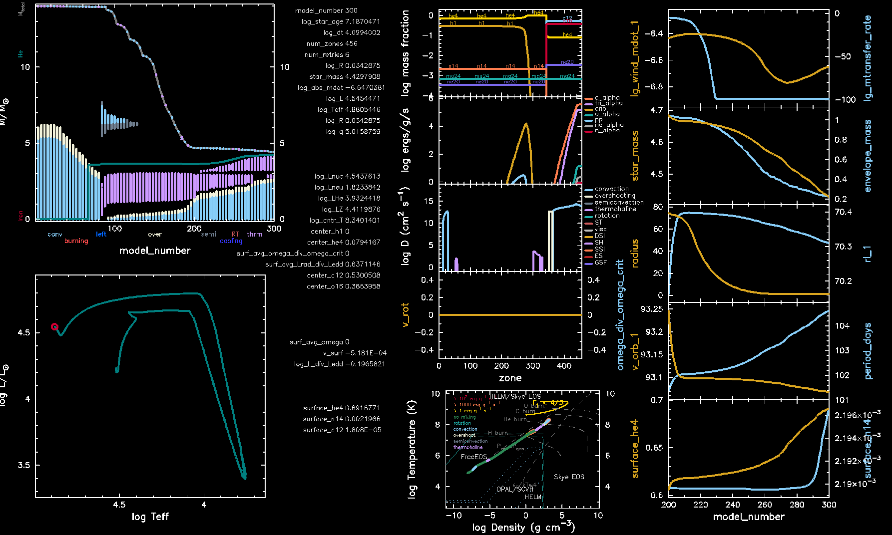
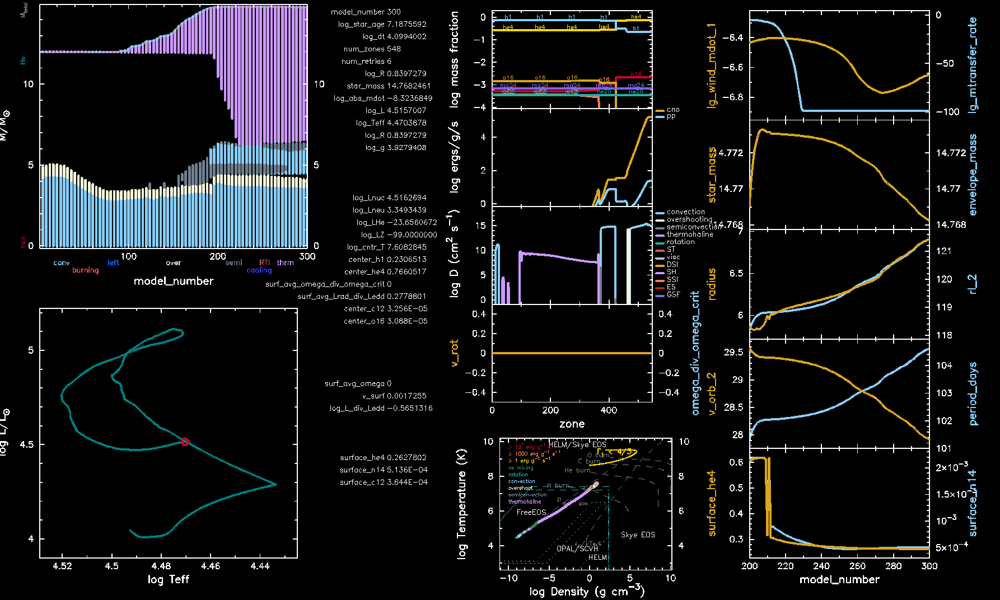

MESA@Konkoly – Massive Binaries¶
Modeling a post-interaction binary and its future evolution
From days of peace when stars stand apart,
Through times of strife when mass is exchanged,
Till the lone core's inward, final collapse
when the roles in the pair reverse.
| Lecturer: | Jakub Klencki |
|---|---|
| TAs: | Natalie Rees, Jared Goldberg, Amedeo Romagnolo |
| Date: | August 2023 |
Introduction¶
The vast majority of massive stars are formed in binaries or higher order systems. In most of such systems, the stars will at some point engage into a mass transfer phase during which the gravitational pull from one of the stars (accretor) strips mass from its companion (donor). Mass transfer has drastic consequences for the basic properties of both stars as well as their final fates. Most mass losers become hot and compact stripped stars, which emit most of their light in the UV band, are a prominent source of ionizing photons, and the progenitors of stripped supernovae. Mass gainers, on the other hand, are thought to become some of the most massive stars in stellar populations, yielding stars such as extreme rotators or potentially magnetic stars.
Despite the fact that most massive stars are expected to interact, very few massive post interaction binaries are known. During this lab, we will model the evolutionary history of one of the rare cases that have been found and better understand the scarcity of such systems. The lab is inspired by the recent discovery of a particular system SMCSGS-FS 69 by Ramachandran et al. (2023).
Overview of the binary work directory and inlists¶
We start by exploring the binary work directory using the tree command which shows
all the files contained within the current folder. If the tree command is not
available in your system, you can also use ls -lh * to see all files within the work
folder. The structure of a binary work folder is similar to that of a star, after all a
binary system is just two stars with some extra physics that connects them.
Binary inlists¶
To evolve a binary you need three inlists, one for each star and an extra inlist to detail
the binary physics. inlist1 is conventionally used for the primary star (the initially
more massive star) and inlist2 for the companion (secondary) star. These inlists
contain the same options you use with single star simulations.
Note
In inlist1 and inlist2, we modify the name of each LOGS directory to prevent a
collision of output within the same directory.
&controls
! Where to put the output files for the star
log_directory = 'LOGS1'
! Store the screenlong from the star
extra_terminal_output_file = 'log1'
...
/ ! end of controls namelist
inlist_project contains all the options relevant to the binary system and how the
stars interact. The inlist must contain two sections: binary_job and
binary_controls, the options for which can be found in the files…
- $MESA_DIR/binary/defaults/binary_job.defaults
- $MESA_DIR/binary/defaults/binary_controls.defaults
A simple example for inlist_project is:
&binary_job
inlist_names(1) = 'inlist1'
inlist_names(2) = 'inlist2'
evolve_both_stars = .true.
/ ! end of binary_job namelist
&binary_controls
m1 = 14.0d0 ! donor mass in Msun
m2 = 12.0d0 ! companion mass in Msun
initial_period_in_days = 30d0
history_name = 'binary_history.data'
/ ! end of binary_controls namelist
Note
Some important controls in inlist_project to highlight are…
inlist_names(*): The inlists of each star do not have hard-coded names and can be modified with this.evolve_both_stars: If true, MESA will model both stars, otherwise star 2 will be set to a point mass. In this caseinlist2is ignored.m1,m2andinitial_period_in_days: The initial mass and period of the binary system. Default for eccentricity is zero.history_name: In addition to the output produced by each star inLOGS1andLOGS2, the binary run will save a history filebinary_history.datacontaining properties of the binary system.
The src folder¶
Now have a look in the src folder.
You will see that in addition to run_star_extras.f90 there is another file called run_binary_extras.f90.
The file offers similar functionality, allowing for the inclusion of custom output, modified physics, termination conditions and much more!
Throughout these labs we will explore different ways in which you can customize your binary simulation using this file.
Much like the star_info pointer, there is a binary_info pointer that contains information specific to the binary system.
For example, the orbital period can be accessed with b% period.
The information contained in the binary_info pointer can be checked in the file $MESA_DIR/binary/public/binary_data.inc.
Some examples of useful values are:
b% m(1)andb% m(2): The stellar mass of each component in grams.b% r(1)andb% r(2): The photopshere radius of each component in cm.b% mtransfer_rate: The mass transfer rate from the donor to the accretor.b% xtra(:): Allows to store information. For instance,b% xtra(1)could be used to store the time during which a specific condition in the simulation has been met. Note thatb% xtra(:)are typereal(dp)by definition.
The star_info pointers for each star can also be accessed in run_binary_extras through the binary_info pointer.
For example b% s1% star_mass will give you the stellar mass of the primary.
Running a binary model¶
We run a binary simulation in the same way as a single star:
./clean
./mk
./rn | tee out.txt
Note: if you run into problems here giving errors like permission denied: ./mk then run the following lines in your terminal:
chmod +x clean
chmod +x mk
chmod +x re
The ./mk command is only needed when modifying the run_*_extras files; modification of inlist files does not require recompilation.
The tee command is just a convenient way to store the terminal output in a file while still displaying it in the terminal.
Try running your work folder for a few (at least 50) steps and then stop the simulation by pressing ctrl+c.
First thing you will notice is a significant amount of additional output, including information for both stars in the model as well as the binary system.
Below is some example output.
Rows corresponding to the primary star are labelled with 1, secondary star 2 and binary system properties bin.
1 2 3 4 5 6 7 8 9 10 11 12 13 14 15 16 17 18 19 20 21 22 23 24 25 26 27 28 29 30 31 32 | __________________________________________________________________________________________________________________________________________________
step lg_Tmax Teff lg_LH lg_Lnuc Mass H_rich H_cntr N_cntr Y_surf eta_cntr zones retry
lg_dt_yrs lg_Tcntr lg_R lg_L3a lg_Lneu lg_Mdot He_core He_cntr O_cntr Z_surf gam_cntr iters
age_yrs lg_Dcntr lg_L lg_LZ lg_Lphoto lg_Dsurf CO_core C_cntr Ne_cntr Z_cntr v_div_cs dt_limit
__________________________________________________________________________________________________________________________________________________
1 10 7.565701 3.278E+04 4.206930 4.206930 13.999940 13.999940 0.743174 0.001022 0.252000 -5.440099 348 0
3.8841E+00 7.565701 0.592472 -27.107696 3.054678 -8.830683 0.000000 0.253357 0.001381 0.003400 0.014491 5
1.0376E+05 0.954151 4.201846 -99.000000 -99.000000 -8.754185 0.000000 0.000013 0.000357 0.003469 0.604E-09 max increase
__________________________________________________________________________________________________________________________________________________
step lg_Tmax Teff lg_LH lg_Lnuc Mass H_rich H_cntr N_cntr Y_surf eta_cntr zones retry
lg_dt_yrs lg_Tcntr lg_R lg_L3a lg_Lneu lg_Mdot He_core He_cntr O_cntr Z_surf gam_cntr iters
age_yrs lg_Dcntr lg_L lg_LZ lg_Lphoto lg_Dsurf CO_core C_cntr Ne_cntr Z_cntr v_div_cs dt_limit
__________________________________________________________________________________________________________________________________________________
2 10 7.554029 3.073E+04 4.013880 4.013880 11.999977 11.999977 0.743422 0.000988 0.252000 -5.241114 456 0
3.8841E+00 7.554029 0.551935 -27.648173 2.864950 -9.253321 0.000000 0.253104 0.001422 0.003400 0.015688 5
1.2191E+05 1.022720 4.008832 -99.000000 -99.000000 -8.728897 0.000000 0.000013 0.000357 0.003474 0.412E-09 max increase
__________________________________________________________________________________________________________________________________________________
binary_step M1+M2 separ Porb e M2/M1 pm_i donor_i dot_Mmt eff Jorb dot_J dot_Jmb
lg_dt M1 R1 P1 dot_e vorb1 RL1 Rl_gap1 dot_M1 dot_Medd spin1 dot_Jgr dot_Jls
age_yr M2 R2 P2 Eorb vorb2 RL2 Rl_gap2 dot_M2 L_acc spin2 dot_Jml rlo_iters
__________________________________________________________________________________________________________________________________________________
bin 10 25.999917 57.866910 10.000064 0.000E+00 0.857145 0 1 0.000E+00 -3.779E-01 1.514E+54 -3.538E+36 0.000E+00
3.884066 13.999940 3.912656 0.000000 0.000E+00 135.121388 22.703200 -8.277E-01 -1.477E-09 1.000E+99 0.000E+00 0.000E+00 0.000E+00
3.8523E+04 11.999977 3.563978 0.000000 -5.506E+48 157.641250 21.159320 -8.316E-01 -5.581E-10 0.000E+00 0.000E+00 -3.538E+36 1
|
Now lets have a look at how the model data is saved.
For each star, there will be a LOGS folder containing all the profile data and the history data file.
In addition, there is a history file for the binary system called binary_history.data.
This data is also copied into the single star history file, LOGS1/history.data.
This is just an internal workaround in the code to allow for information from the binary system to be included in pgstar plots.
To change the information contained in binary_history.data, you can copy the file $MESA_DIR/binary/defaults/binary_history_columns.list to your work folder and comment/uncomment the necessary fields.
Alternatively, new fields can be added with the subroutines of run_binary_extras.
Restarting a Binary Model¶
The photos, which are needed to restart simulations, are also stored differently from star.
Have a look in the photos folder and you will see that for each saved timestep a photo is saved containing the information of each star modeled (1_x050, 2_x050) as well as one from the binary system (b_x050). To restart a simulation from step 50, you can then do:
./re x050 | tee outre.txt
pgstar¶
We have included a starting pgstar setup for each star at the bottom of the individual inlists inlist1 and inlist2.
This will open one window for each star with an array of helpful plots.
If your pgstar windows are too big or too small you can change the size with the Grid2_win_width control.
Minilab 1: Stable Mass Transfer Evolution¶
Producing a Stripped Star Binary¶
To start our understanding of binary evolution and the nature of post-interaction binaries,
we will run a system with initial masses \(M_1=14~M_{\odot}\), \(M_2=12~M_{\odot}\)
and period \(P=30\) days.
The stopping condition in both inlist1 and inlist2 is set so that the evolution will be
followed until one of the stars reaches the end of core helium burning:
! Central abundance limit
xa_central_lower_limit_species(1) = 'he4'
xa_central_lower_limit(1) = 0.01d0
Start the simulation and watch the pgstar output as the system evolves. The run should take around 6 minutes on 4 cores and 20 minutes on 1 core. To see the mixing regions in the pgstar Kippenhahn diagram (mass vs model number), make sure that the mixing_regions <integer> option is uncommented in history_columns.list and changed to mixing_regions 10.
Can you answer the following questions?
- At what stage in its evolution does the primary fill its Roche lobe? Is this case A, B or C mass transfer?
- How does the mass transfer affect the donor star? Discuss the evolution of the main properties (mass, luminosity, surface composition), in particular comparing the state before vs after the mass transfer.
- How does the mass transfer affect the accretor? Discuss the evolution of the main properties (mass, luminosity, surface composition), in particular comparing the state before vs after the mass transfer.
Answers
The primary undergoes Roche-lobe overflow while rapidly expanding after the end of the MS, in the transition towards the core-He burning phase, which makes it case B mass transfer.
The luminosity of the primary drops dramatically (by an order of magnitude!) as it rapidly loses mass during mass transfer. The luminosity drop is not due to the decrease in the nuclear energy production (which stays roughly constant and even increases towards the end of the mass transfer phase) but rather because most of the energy is trapped in the outer layers which expand in response to rapid mass loss.
Once most of the envelope has been lost, the stripped primary begins to contract and to move leftward in the HR diagram. The binary detaches and the mass transfer stops. Despite having lost most of its mass (going from \(14~M_{\\odot}\) to \(<5~M_{\\odot}\)), at the end of mass transfer the stripped primary is even more luminous than before the interaction. The remaining envelope of \(1~M_{\\odot}\) is enough to sustain hydrogen-shell burning, at that point producing nearly 90% of the total luminosity. As the thin envelope gets steadily depleted of hydrogen, the shell burning luminosity (as well as the total luminosity of the stripped star) drops down.
The primary is stripped down to layers which were partially processed during core hydrogen burning. Thus, the surface is enhanced in helium compared to non stripped stars. The surface is also enhanced in nitrogen-14 due to the CNO cycle converting carbon and oxygen into nitrogen.
During mass transfer, the companion becomes subject to a large amount of mass that it gains on a short timescale. This process drives its outer layers out of thermal equilibrium, resulting in a significant increase in the luminosity and radius. The moment when the accretor is the most luminous roughly corresponds to when the mass transfer rate (and therefore, with our current assumptions, also the mass accretion rate) is the largest. At some point, the accretor begins to contract (moving leftwards in the HR diagram). This corresponds to when it stars to accrete helium-rich mass, coming from deep donor layers that were processed through nuclear burning. Eventually, at the end of the mass transfer, the accretor regains thermal equilibrium and resettles onto a MS track with a higher luminosity and temperature than before the mass transfer. These are signatures of rejuvenation: a star that has gained mass will often appear as a younger version of an initially more massive star.
{kind=link}

Fig. 1 Final pgstar output for the primary star in minilab 1.¶
{kind=link}

Fig. 2 Final pgstar output for the secondary star in minilab 1.¶
Customizing run_binary_extras¶
Now we know how a massive binary looks like during and after a mass transfer interaction phase. Ideally, we would like to observe real systems during those exciting evolutionary stages to constrain our models. To understand challenges in finding such binaries (and to practice adding custom code to run_binary_extras), we will now examine the timescales:
Questions:
- How long does the mass transfer phase last? Which timescale often used in stellar evolution does it correspond to? What fraction of the total lifetime of the primary is it?
- When does the mass transfer stop? How long is the post-interaction lifetime of the system? (until the end of core-He burning of the primary) Which timescale often used in stellar evolution does it correspond to?
- In the post-interaction binary, which star is more luminous? And which star appears brighter in the optical band? (take V band)
- Find the duration of the phase when the stripped primary contributes at least 50% of the flux in the V band. Compare it to the thermal and nuclear timescales of the primary.
- (extra, conceptual) When the stripped primary is still contracting after the end of the mass transfer and overlapping with the main sequence, how to distinguish it observationally from a normal, pre-interaction MS star?
To answer the questions regarding the duration of a specific timescale, you can modify run_binary_extras to check at each step whether our condition is fulfilled and, if so, add the duration of the current timestep.
We use the b% xtra(:) hooks as ‘global’ variables to access the current duration and so on.
To time the mass transfer phase add the following code into the extras_binary_check_model function:
! calculate mass transfer duration
! adds timestep to mass transfer duration when the primary is filling its RL
! due to bug with xtra this cannot be put in extras finish step
if (b% r(1) > b% rl(1)) then
b% xtra(1) = b% xtra(1) + b% time_step
write(*,*) 'Mass transfer duration (yrs) = ', b% xtra(1)
end if
Warning
The natural place to implement this code would be in extras_binary_finish_step. However, there is a bug causing changes to b% xtra(:) to not be stored, so we recommend implementing the code in extras_binary_check_model instead.
We also want to time the post-interaction lifetime up to the point of core helium exhaustion. The run_binary_extras module already contains a logical variable b% lxtra(ilx_reached_rlo), which is set to true when RLOF (Roche Lobe Overflow) starts. This can be used to find the endpoint of RLOF along with a comparison of the primary’s radius and Roche Lobe radius.
To time the post-interaction phase, add the following code to the extras_binary_check_model function:
! calculate post-interaction lifetime
! if RLOF has already occurred and primary not filling RL, then add timestep
if ((b% r(1) < b% rl(1)) .and. (b% lxtra(ilx_reached_rlo))) then
b% xtra(2) = b% xtra(2) + b% time_step
write(*,*) 'Post-interaction duration (yrs) = ', b% xtra(2)
end if
To calculate the V band magnitude, we will use a table for bolometric corrections for filters from one of the HST cameras. More information on these filters can be found here. This table is already available in your work directory in the file named fehm050_Av03.HST_WFPC2.
To add our own custom color filters, we first need to direct the colors module towards this file. To do so, insert the following code into the star_job section of both inlist1 and inlist2:
! custom color file
color_num_files=1
color_file_names(1) = 'fehm050_Av03.HST_WFPC2'
color_num_colors(1) = 13
There are a number of functions in $MESA_DIR/colors/public/colors_lib.f90 that are available for reading and interpolating these data tables.
Use the get_abs_mag_by_name(name,log_Teff,log_g,m_div_h,lum,ierr) function to calculate the absolute magnitude of each star where name = 'F450W' for the optical filter we want to use.
Save the values in variables called abs_mag_V_1 and abs_mag_V_2.
You will need to use the star pointer to retrieve the values of log_Teff, log_g, and lum at the surface of each star, for example, b% s1% Teff. Let’s set the value of the metal content ratio to be constant at m_div_h=-0.5, motivated by the Small Magellanic Cloud.
Below are some hints to help with the implementation but if you get stuck, no worries; there are solutions at the end of minilab 1. Once implemented, try compiling with ./mk but don’t run the model yet.
Hint
First, import the function by adding the following line to the top of
extras_binary_check_model:use colors_lib, only : get_abs_mag_by_name
Remember that all variables used in Fortran need to be declared at the top of the function with code such as:
real(dp) :: abs_mag_V_1
The surface properties are stored under the variables
Teff,photosphere_logg, andphotosphere_L.To calculate the log of a quantity, you can use the
safe_log10function, which is automatically imported.
After calculating the V band magnitude for each star, we can determine the duration of the phase when the stripped primary star dominates the flux in the V band. The code is very similar to what was used to calculate the post-interaction lifetime. However, there’s an additional condition: the V band magnitude of the primary must be greater than that of the secondary.
! if post-interaction primary dominates in V band add time-step to duration
if ((b% r(1) < b% rl(1)) .and. (b% lxtra(ilx_reached_rlo)) &
.and. (abs_mag_V_1 < abs_mag_V_2)) then
b% xtra(3) = b% xtra(3) + b% time_step
end if
Finally, to print out the result of each calculation to the terminal at the end of the run, you can add the following code to the extras_binary_after_evolve subroutine:
! print mass transfer duration and post-interaction lifetime
write(*,*) 'Mass transfer duration (yrs) = ', b% xtra(1)
write(*,*) 'Fraction of total lifetime = ', b% xtra(1)/b% binary_age
write(*,*) 'Post-interaction lifetime (yrs) = ', b% xtra(2)
write(*,*) 'Primary dominating V band Post-interaction duration (yrs) = ', &
b% xtra(3)
write(*,*) 'Thermal timescale of primary (yrs) = ', b% s1% kh_timescale
write(*,*) 'Nuclear timescale of primary (yrs) = ', b% s1% nuc_timescale
EXTRA: These calculations could also be done using the data stored in binary_history.data. If you have extra time at the end of the lab, you might want to explore this.
Answers
- The mass transfer lasts for 11265 years which is 0.0007 of the total lifetime. This corresponds to the thermal timescale of the donor.
- Mass transfer stops at time \(1.4 \times 10^{7}\) years. The post-interaction lifetime is \(1.2 \times 10^{6}\) years, which corresponds to the nuclear timescale of core-He burning evolution of the primary.
- In terms of the bolometric luminosity, the primary is always brighter than the secondary (with the exception of the brief period of rapid mass transfer). In the optical band, however, the brightness of the primary drops down below that of the companion when it becomes a hot and compact helium star (in the leftmost part of its HR diagram track).
- The primary is brighter in the V band than its companion for only about 10% of its post-interaction lifetime (\(\sim10^{5}\) years), during the phase when it contracts and moves leftwards in the HR diagram. The total post-interaction lifetime is comparable to the nuclear timescale of core-He burning of the primary (\(1.1 \times 10^{6}\) years) and 100 times the thermal timescale of the primary (\(1.2 \times 10^{4}\) years). While the \(\sim10^{5}\) years when the stripped primary is bright in optical is longer than the thermal timescale (by about a factor of 10), this is still a relatively short-lived phase. For most of the post-interaction lifetime, the stripped primary is greatly out-shined by its companion in optical bands and can only easily be observed in the UV. This is the main reason why so few stripped stars originating from \(\sim5-20 \, \text{M}_{\odot}\) stars have been discovered so far, despite it being one of the most common outcomes of massive binary evolution.
- So we have a post-interaction (partially) stripped star that just detached from mass transfer and is currently overlapping with the population of the MS stars, having the same luminosity and temperature combination as a normal star. The first clue that it is not a typical star comes from the surface abundances (enhanced helium and nitrogen, depleted carbon and potentially also oxygen). However, single massive stars can also be enriched with products of nuclear burning on the surface as a result of rotationally-induced mixing during the MS, so on its own it is not a smoking-gun signature of a post-interaction nature of such a star. Another strong indication is its very low mass compared to MS stars of the same luminosity, which can be revealed through spectroscopy (the so-called spectroscopic mass measurement). Additional clues may come from the presence of a rapidly-rotating companion or from age discrepancy between the two binary components.
Extra – Exploring Uncertainties in the Envelope Stripping¶
Surface properties of stripped stars are very sensitive to the exact amount of H-rich envelope that is left unstripped after the mass transfer, as well as the shape of the H/He abundance profile of the surface layers. In this section, we’ll explore how strongly (or weakly) these properties can be affected by our assumptions.
To examine the effects, change the orbital separation of the binary system. This will allow you to observe how different separations impact the mass transfer interaction, the post-interaction phase of the binary, and the surface properties of the stripped star. To do this, modify the orbital period in inlist_project.
The table below estimates the computational time needed for simulations with different orbital periods when running on 4 cores and 1 core. If you’re running out of time, you can always leave the simulation running during the break.
| Period (days) | Num Models | Time on 4 Cores (mins) | Est Time on 1 Core (mins) |
|---|---|---|---|
| 5 | 1273 | 15 | 53 |
| 10 | 460 | 7 | 25 |
| 30 | 389 | 6 | 21 |
| 50 | 542 | 8 | 28 |
| 100 | 536 | 9 | 32 |
| 300 | 1155 | 15 | 53 |
There are various other factors known to affect the efficiency of envelope stripping in interacting binaries. While exploring these is beyond the scope of this lab, you can experiment by varying parameters that determine the efficiency of chemical mixing in the donor. This includes the extent of core-overshooting during the Main Sequence, efficiency of semiconvective mixing, and rotational mixing in models with enabled rotation.
The significance of these parameters lies in their impact on the H/He abundance profile of the bottom envelope layers. This, in turn, influences the size of the stripped star and thus the exact moment when the binary detaches and the envelope stripping stops. In certain scenarios, such as high semiconvection and low metallicity, the remaining envelope layer could be so thick that the donor will never become a UV-bright, hot, and compact helium star. These factors may seem nuanced but have far-reaching implications, affecting the UV flux of stellar populations, nucleosynthesis, and the types of supernova progenitors.
Solutions¶
A complete implementation for Minilab 1 is provided below. For answers to specific questions, please refer to the ‘Answers’ boxes above.
Reveal the final solution to Minilab1
integer function extras_binary_check_model(binary_id)
use colors_lib, only : get_abs_mag_by_name
type (binary_info), pointer :: b
integer, intent(in) :: binary_id
integer :: ierr
real(dp) :: m_div_h = -0.5
real(dp) :: abs_mag_V_1, abs_mag_V_2
character(len=15) :: mag_band_name = 'WFPC2_F450W'
call binary_ptr(binary_id, b, ierr)
if (ierr /= 0) then ! failure in binary_ptr
return
end if
extras_binary_check_model = keep_going
! calculate mass transfer duration
if (b% r(1) > b% rl(1)) then
b% xtra(1) = b% xtra(1) + b% time_step
write(*,*) 'Mass transfer duration (yrs) = ', b% xtra(1)
end if
! calculate post-interaction lifetime
if ((b% r(1) < b% rl(1)) .and. (b% lxtra(ilx_reached_rlo))) then
b% xtra(2) = b% xtra(2) + b% time_step
write(*,*) 'Post-interaction duration (yrs) = ', b% xtra(2)
end if
! use routine from colors/public/colors_lib.f90 to calculate abs magnitude
abs_mag_V_1 = get_abs_mag_by_name(mag_band_name, safe_log10(b% s1% Teff), &
b% s1% photosphere_logg, m_div_h, b% s1% photosphere_L, ierr)
! secondary
abs_mag_V_2 = get_abs_mag_by_name(mag_band_name, safe_log10(b% s2% Teff), &
b% s2% photosphere_logg, m_div_h, b% s2% photosphere_L, ierr)
! check for errors
if (ierr /= 0) return
! print magnitude values
write(*,*) 'primary V band mag = ', abs_mag_V_1
write(*,*) 'secondary V band mag = ', abs_mag_V_2
! if post-interaction primary dominates in V band add time-step to duration
if ((b% r(1) < b% rl(1)) .and. (b% lxtra(ilx_reached_rlo)) &
.and. (abs_mag_V_1 < abs_mag_V_2)) then
b% xtra(3) = b% xtra(3) + b% time_step
end if
end function extras_binary_check_model
subroutine extras_binary_after_evolve(binary_id, ierr)
type (binary_info), pointer :: b
integer, intent(in) :: binary_id
integer, intent(out) :: ierr
call binary_ptr(binary_id, b, ierr)
if (ierr /= 0) then ! failure in binary_ptr
return
end if
! print mass transfer duration and post-interaction lifetime
write(*,*) 'Mass transfer duration (yrs) = ', b% xtra(1)
write(*,*) 'Fraction of total lifetime = ', b% xtra(1)/b% binary_age
write(*,*) 'Post-interaction lifetime (yrs) = ', b% xtra(2)
write(*,*) 'Primary dominating V band Post-interaction duration (yrs) = ', &
b% xtra(3)
write(*,*) 'Thermal timescale of primary (yrs) = ', b% s1% kh_timescale
write(*,*) 'Nuclear timescale of primary (yrs) = ', b% s1% nuc_timescale
end subroutine extras_binary_after_evolve
Minilab 2 (“Midilab”): The Efficiency of Mass Transfer¶
Calibrating the Efficiency of Mass Transfer to an Observed System¶
When mass transfer occurs in nature, matter does not simply move from one star to the other and is all accreted in a spherically symmetric way. The gas is funnelled through the inner Lagrangian point and flows into the Roche lobe of the companion, starting a complex journey that may end up on the surface of the companion. Depending on the geometry of a particular binary, the flow might directly hit the companion or circularize to form an accretion disk. Some (or even most) of the transferred mass may ultimately be lost from the system due to disk winds, collimated outflows, or mass leakage through the outer Lagrangian points. Back in the day, those brave and brilliant would attempt to describe all those processes analytically (e.g. the seminal paper by Lubow & Shu, 1975). Nowadays, we can even begin to attack those problems with 3D hydrodynamic simulations. Either way, the complicated gas dynamics of binary interactions are far out of the regime of 1D stellar codes such as MESA and we need to resort to simplified prescriptions.
One of the key choices we need to make is the “accretion efficiency”: the fraction of the mass lost by the donor that will become accreted by the companion.
This efficiency is not just one parameter, but rather, is parameterized with the following set of controls in the &binary_controls section of the inlist:
mass_transfer_alpha = 0d0 ! fraction of mass lost from the vicinity of donor as fast wind
mass_transfer_beta = 0.6d0 ! fraction of mass lost from the vicinity of accretor as fast wind
mass_transfer_delta = 0.1d0 ! fraction of mass lost from circumbinary coplanar toroid
mass_transfer_gamma = 1.2d0 ! radius of the circumbinary coplanar toroid is
! "gamma**2 * orbital_separation"
The total mass accreted by the mass-gainer is then calculated as \((\rm 1 - alpha - beta - delta) \; \times \;\) (the mass lost by the donor). The above choice of parameters corresponds then to an accretion efficiency of 30%. The parameter gamma is used to calculate the amount of angular momentum carried away with the mass lost through a circumbinary disk or toroid (set by delta). The choice of gamma = 1.2 corresponds to a radius at which a circumbinary disk tends to be the most stable. Throughout this minilab, we will always assume alpha = 0 and delta = 0.1 and vary the beta parameter.
Now that we know how to run binary models in MESA and create post-interaction binaries, we are tasked to reproduce the parameters of an actual system SMCSGS-FS 69 that have been derived through spectroscopic analysis. These parameters are given in Table 2 on the next page. For simplicity, we will only aim to reproduce the effective temperatures, luminosities, and surface gravities of both components (the primary = stripped star = “the donor”, the secondary = Be star = “the accretor”).
Note
Chances are that the best fitting model we find will also give a reasonably good agreement with the measured surface abundances. Let’s find out!
Recall/take a look at the \(L\) and \(T_{\mathrm{eff}}\) you found for both stars in Minilab 1 (you can do this from the terminal by running
less -Sx32 ../minilab1/LOGS1/history.data
for the donor and LOGS2 for the secondary, and looking at the columns log_L and log_Teff). Do these fit the properties of the stripped star (the donor)? How about the secondary? What could we change in the setup to make the model match better?
Answer
Hopefully, we see that the model from Minilab 1 reproduces the properties of the stripped primary (temperature, luminosity, logg) but fails to match the accretor (the luminosity is too low). This suggests that the choice of the primary mass is correct but the companion mass and/or the accretion efficiency needs to be adjusted. We probably need to accrete more material, or to start with a more massive companion.
| Stripped star | Be star | |
|---|---|---|
| \(T_{\rm eff}\) (kK) | \(24^{+2}_{-1}\) | \(28^{+1.5}_{-3}\) |
| \(\log g_\ast(\rm cm \; s^{-2})\) | \(2.65^{+0.2}_{-0.1}\) | \(3.7^{+0.2}_{-0.2}\) |
| \(\rm flux \; f / f_{tot} (V)\) | \(0.65\) | \(0.35\) |
| \(\log (L / L_\odot)\) | \(4.7^{+0.1}_{-0.1}\) | \(4.7^{+0.05}_{-0.05}\) |
| \(R_\ast (R_\odot)\) | \(13^{+1}_{-1.5}\) | \(8.7^{+2}_{-1.5}\) |
| \(v \sin i \;(\rm km \; s^{-1})\) | \(50^{+10}_{-10}\) | \(400^{+100}_{-100}\) |
| \(X_{\rm H}\) (mass fr.) | \(0.59^{+0.1}_{-0.1}\) | \(0.737\) |
| \(X_{\rm He}\) (mass fr.) | \(0.40^{+0.1}_{-0.1}\) | \(0.26\) |
| \(X_{\rm C}/10^{-5}\) (mass fr.) | \(\lesssim 1\) | \(21\) |
| \(X_{\rm N}/10^{-5}\) (mass fr.) | \(120^{+20}_{-20}\) | \(3\) |
| \(X_{\rm O}/10^{-5}\) (mass fr.) | \(\lesssim 7\) | \(113\) |
| \(M_\mathrm{spec} \; (M_\odot)\) | \(2.8^{+1.5}_{-0.8}\) | \(17^{+9}_{-7}\) |
Varying the Mass Transfer Efficiency¶
To fully match the observed system (e.g. luminosities, \(T_{\rm eff}\)’s, surface gravity of both components), we will vary the efficiency of mass transfer by changing the mass_transfer_beta parameter. We will also explore several different initial companion masses. To limit the number of possibilities, we will keep the initial primary mass (\(14 M_{\odot}\)) and initial orbital period (30 days) fixed.
As each run may take a while, we will crowd-source this!
Download a clean Minilab2 working directory from the Google Drive Folder.
Next, we will all choose different companion masses and beta parameters.
In the Google Sheet, write your name in the leftmost column of a row to select a ZAMS mass for the companion star (options are 8, 9, 10, 11, 12, 13, 13.5 \(M_{\odot}\)) and a mass-transfer efficiency parameter beta (options are 0.2, 0.4, 0.6, 0.8, 0.9, which correspond to accretion efficiencies of 70%, 50%, 30%, 10% and 0%, since mass_transfer_delta is set to 0.1). This gives 35 combinations to explore, so if you didn’t claim a row in the spreadsheet quickly enough, feel free to double up and pick your favorite, just try not to repeat any exact combination with anyone at your table.
Note
If you have a slower computer, it is advised to start with a higher initial mass of the secondary and one of the lower accretion efficiencies (i.e. higher mass_transfer_beta values). If you have a faster computer, consider claiming one of the lower-mass secondaries.
Set the companion mass m2 and the mass_transfer_beta to your chosen values in the &binary_controls section of your inlist_project. Additionally, change the model loaded into the &star_job section of inlist2 to match your chosen mass as well (the model name format should follow ZAMS_model_<MASS>.mod) replacing <MASS> with your chosen companion mass. Double check that the initial primary mass is \(14 M_{\odot}\) and the initial orbital period is 30 days.
! Modify inlist_project and inlist2 to include your chosen secondary mass
! and mass_transfer_beta
! Also check that your primary mass is 14Msun and initial period is 30 days
Compile, and run your new model! (./mk && ./rn)[1]
You may notice also that a new pgplotting window pops up which includes information about both stars, as well as some of the orbital parameters. This is the very new pgbinary capability, available as of the now-most-recent public MESA revision (mesa-r23.05.1) onward! Pgbinary plots the pgstar for both stars on the same window, allowing the user to stare at both stars without clicking between pgplotting windows! If you have extra time while the models are running, feel free to look through the inlists and play around with the output, although that won’t be the focus of our lab today.
Like pgstar, as long as you use allowable namelist items, pgbinary checks the inlist and refreshes every time it updates, so you can modify it while the model runs.
For more information, see the defaults in $MESA_DIR/star/defaults/defaults/pgbinary.defaults, and the discussion in the Changelog on the MESA website !
| [1] | If you get “Permission Denied” errors, make these scripts executable from the command line with chmod +x clean mk rn re |
While the models are running, compare with the others at your table! As your runs finish, add your results to the spreadsheet. To do so, find when the model matches the luminosity and effective temperature of the stripped-star primary and, for that time step, note down what is the luminosity, effective temperature, and surface gravity of the secondary star (also referred to as the accretor, the companion) in the Google Sheet! For convenience, a number of history columns for star 2 are printed to the terminal output via num_trace_history_values in inlist2 and a subset of those columns are output for star 1 in inlist1.
Some Questions to Discuss While the New Models are Running¶
- Which of the properties given in Table 2 are the clues that the system is a post-interaction binary?
- Qualitatively, what do you expect to happen to the evolution of the accretor star when you change the efficiency of mass transfer? What about the donor star? What do you see happen?
- From everyone’s crowd-sourced data, what set of accretion efficiency parameters best matches both the donor and the accretor?
What Might Limit the Mass-Transfer?¶
In the previous section, we varied the mass transfer rate in order to match an observed system – but there are physical considerations which may also limit the ability of the accretor star to accept more material!
For now, let’s all set:
mass_transfer_beta = 0d0
back in inlist_project.
Now we will explore two properties of the accretor star which may serve to limit accretion, namely, its angular momentum content, and its thermal timescale. We will first consider accretion limited by increased angular momentum until the star reaches a critical rotation rate, defined when the surface rotational velocity equals the escape velocity. Time permitting, we will then consider accretion limited by the star’s thermal timescale (as a bonus task, for those valuable MESA bonus points).
Ad hoc Model 1: Angular Momentum and Critical Rotation¶
As we may notice from the measured fast rotation rate of the accretor, rotation is very important in binary stellar evolution! However, to directly include rotation in our 1D models would cause the runtime to increase far beyond what can be covered in a 1-2 hour minilab, even at the low resolution we are using.
Though a full binary run with rotation is beyond the scope of today’s lab, we can estimate the impact rotation might have on the accretion efficiency by tracking the amount of angular momentum the star might accrete, combined with a few assumptions.
Ad hoc Model 1: “Painted-on” Critical Rotation:¶
We want to estimate the point during the mass transfer when the secondary gets spun up to critical rotation, i.e. the point when the combined centrifugal force and radiation pressure (at the equator) equal gravity. But we want to do this in a simplified way, without actually including rotation in MESA.
Here is a sketch of the model and its underlying assumptions:
- The secondary is initially non-rotating and its internal angular momentum is zero.
- The matter that is accreted has specific angular momentum corresponding to a Keplerian circular orbit with semi-major axis equal to the accretor’s radius.
- The angular momentum transport in the accretor star is efficient, such that the star itself rotates as a solid-body with constant \(\omega = \ell_{\rm total}/I_{*}\) where \(\ell_{\rm total}=\sum\Delta\ell\) is the total accreted angular momentum and \(\Delta\ell\) is the angular momentum added in a given timestep, and \(I_*\) is the moment of inertia of the star.
- We neglect loss of angular momentum from the accretor (e.g. due to tides or winds), and only calculate the added angular momentum (that is, only add \(\Delta \ell\) when \(\dot{M}\) is positive).
- As long as the secondary has not reached critical rotation, it keeps accreting 100% of the material transferred through L1 (i.e.
mass_transfer_beta = mass_transfer_delta = mass_transfer_alpha = 0). - If the stellar rotation rate \(\omega\) exceeds the critical rotation rate, \(\omega_{\rm crit}\), the accretor cannot accept any more material, and the accretion efficiency goes to zero (i.e.
mass_transfer_beta = 1).
Implementation¶
We will implement this in run_binary_extras.f90 by modifying the extras_binary_finish_step function. Remember that run_binary_extras.f90 is just like run_star_extras.f90, except that its functions and subroutines act on the binary pointer, which holds two star pointers plus information about properties of the binary system and orbit.
We want to estimate the accreted angular momentum on the secondary star, so we will mostly want the properties of b% s2%. This involves a few calculations and bits of fortran, so we will break this into 4 Checkpoints. It’s generally good practice to check to see if the code compiles after inputting a new piece of code, so after implementing each checkpoint, make sure the code still compiles by running ./mk from the terminal. Doing this will make it much easier to solve compilation errors as they arise.
Checkpoint 0: Initialize a Global Variable to Store the Angular Momentum Accreted¶
The first step is to estimate the total angular momentum that the star has at a given timestep – but how can we store this quantity? One way would be to use a global variable (e.g. real(dp) :: total_AM_accreted) declared at the top of the file just below the line implicit none. An even better method would be to store this quantity as a global variable accessible even on a photo restart, using b% xtra(:) like we did in Minilab 1. So, let’s take that approach! In order to avoid clashing with any implementations left over from minilab1, we will use b% xtra(11), 12, 13, and so on (Bonus: define your own integers and give them more descriptive names, such as i_AM_accreted).
Though it’s not necessary to initialize this value, as all b% xtra(:) are 0 by initialization, it’s good practice to make sure (or, if you wanted to simulate a star with non-zero initial angular momentum, then setting b% xtra(11) in extras_binary_startup would be necessary).
So, in extras_binary_startup, anywhere after the call to binary_ptr(binary_id, b, ierr), add the line:
if (.not. restart) b% xtra(11) = 0d0 ! Note no 'then' in the one-line syntax
Checkpoint 0 achieved! Test to make sure the code still compiles (./mk) but don’t run yet!
Checkpoint 1: Calculate AM accreted in extras_binary_finish_step¶
Now we are ready to implement our custom stopping condition in extras_binary_finish_step. It can never be said too often: Make sure to declare all your variables, and always check your units!
You will probably want to declare some variables to keep track of the added angular momentum (i.e. real(dp) :: total_AM_accreted), angular momentum accreted each timestep (AM_accreted_this_step), the stellar moment of inertia (star_Irot), the critical rotation rate (omega_crit), Eddington ratio which we will discuss below (Eddington_factor), perhaps the Keplerian velocity (v_keplerian), the “painted-on” rotation rate (ad_hoc_omega_rot), and any other variables you want to name to make your bookkeeping easier.
You will also likely want to declare two integers k and nz.
Do your variable declarations below the line integer :: ierr.
If you don’t declare a variable, you will likely see an error when you try to compile that says something like:
Error: Symbol ‘!total_am_accreted’ at (1) has no IMPLICIT type.
Now, let’s calculate the angular momentum accreted at every timestep! Up to a factor of order unity (which depends on the geometry of the accretion flow, e.g. a disk, ring, point mass, spherical shell, etc.) at every timestep, we can estimate the accreted angular momentum in each timestep \(\Delta t\) as:
where \(\dot{M}\) is the accretion rate (b% component_mdot(2)), \(R_*\) is the radius of the accretor star, and
is the tangential velocity on a circular orbit at the stellar radius, and \(M_*\) and \(R_*\) correspond to the mass and radius of the accretor star (b% s2%).
Continue in extras_binary_finish_step and set the total angular momentum accreted to be the same global variable that you initialized in extras_startup.
total_AM_accreted = b% xtra(11)
This is an aesthetic choice, and not strictly necessary – you could avoid defining total_AM_accreted altogether and only ever call b% xtra(11).
We only want to accrete angular momentum if star 2 is gaining mass, and ignore any angular momentum which might be lost via stellar winds (as it turns out, this is a very bad assumption after mass transfer, but as you saw in the last lab, once star 2 begins accretion, \(\dot{M}>0\) during the whole phase of mass transfer). Set up a conditional and calculate the angular momentum accreted in the timestep using Eqs. (1) and (2):
if (b% component_mdot(2) > 0) then
AM_accreted_this_step = !!!!!! Calculate this from Equations 1 and 2
else
AM_accreted_this_step = 0d0
end if
To calculate this, you will need \(\dot{M}\) for star 2, the radius of star 2, the mass of star 2, the gravitational constant, and the timestep [2].
Recall that you can find the star pointer (here we use the secondary, or b% s2%) info structure names in $MESA_DIR/star/data/public/star/data/step/work.inc and the binary pointer (b%)’s info in $MESA_DIR/binary/public/public/binary/data.inc. MESA’s constants can be found in $MESA_DIR/const/public/const_def.f90, and $MESA_DIR/math/public/math_lib_crmath.f90 holds the safe square root (safe_sqrt) and other mathematical operations.
If you are stuck, press to reveal a Fortran-ed up version of Equations 1-2:
AM_accreted_this_step = b% component_mdot(2) * b% s2% dt * sqrt(standard_cgrav * b% s2% mstar * b% r(2))
! Note that b% s2% photosphere_r*RSun and b% r(2) all work for R.
Now, add the angular momentum from this step to the running total, and re-store your global variable:
total_AM_accreted = total_AM_accreted + AM_accreted_this_step
b% xtra(11) = total_AM_accreted ! re-store global variable
Checkpoint 1 achieved! Test to make sure the code still compiles (./mk) but don’t run yet!
| [2] | At the time of writing this lab, there is a bug in MESA binary where b% dt does not store the timestep. However, b% s1% dt and b% s1% dt both do store the correct timestep. |
Checkpoint 2: Estimate the rotation rate¶
Next, one can estimate how fast the star is “rotating.” The angular momentum, divided by the moment of inertia, is approximately the rotation velocity if we assume solid-body rotation:
where \(\ell_{\rm total} = \sum \Delta \ell\) over all timesteps (what we’ve called total_AM_accreted) and \(I_{*}\) is the moment of inertia for the whole star (which we’ve declared as star_Irot).
Although the star’s moment of inertia is often stored in the star info structure in MESA, it is only calculated
directly by MESA if the rotation_flag is turned on, which we have explicitly chosen not to do.
Have no fear, you can calculate this yourself too, by summing the inertia of each spherical shell:
There are many ways to do this in Fortran, either by summing the arrays or looping over the star. However you choose, implement (4) and then define the ad-hoc rotation rate via (3):
star_Irot = !!!!!! Calculate the moment of inertia of the star from Equation 3
ad_hoc_omega_rot = total_AM_accreted/star_Irot
Unlike Python, loops in Fortran are fairly fast and memory-efficient. If you’re stuck, here’s a solution using a do loop:
Reveal Solution
star_Irot = 0d0
do k=1, b% s2% nz
star_Irot = star_Irot + 2d0/3d0*b% s2% dm(k) * b% s2% r(k) * b% s2% r(k)
end do
Note
Checkpoint 2 achieved! Test to make sure the code still compiles (./mk) but don’t run yet!
Checkpoint 3: Calculate the critical rotation¶
Great, you have calculated approximately how fast the accretor star is rotating! Now, we want to see if it’s rotating at the critical rotation rate.
We define the critical rotation rate as the rotation rate where the surface rotation velocity equals the escape velocity. Because these are massive stars, their radiative luminosity may approach the Eddington limit, (L_{rm Edd} = 4pi c G M/kappa). In this regime, the pressure from photons reduces the effective gravity felt by fluid near the stellar surface, thereby reducing the escape velocity, and correspondingly, the critical rotation rate. Including this correction for radiation pressure, i.e., the Eddington ratio, the critical rotation rate is:
where (Gamma_{rm Edd}) is the so-called “Eddington ratio” or “Eddington factor”, (L/L_{rm Edd}),
where (L_*) is the luminosity of the accretor star, (c) is the speed of light, and we will take the opacity to be electron-scattering [^1]. Again, this expression for (omega_{rm crit}) is valid up to a factor of order unity accounting for, e.g. the oblateness of the star as it rotates more rapidly, but that’s fine for the purposes of this exercise.
Gamma_Edd = !!!!! Calculate Gamma_edd from Eq.6 and the accretor properties
omega_crit = !!!!! from Eq.5, Gamma_Edd, and accretor properties
Be careful with units! There are a whole lot of stellar quantities to keep track of in these expressions. Unless specified otherwise, MESA uses cgs units, but sometimes it uses solar units (note, e.g. the difference between s% star_mass and s% mstar)! If you get stuck, an implementation of the critical rotation rate can be found below:
Reveal Solution
Gamma_Edd = (b% s2% L(1))/(4*pi*standard_cgrav*clight*b% s2% mstar / 0.34)
omega_crit = sqrt((1 - Gamma_Edd) * standard_cgrav * b% s2% mstar
/(b% s2% r(1) * b% s2% r(1) * b% s2% r(1)))
Checkpoint 3 achieved! Test to make sure the code still compiles (./mk) but don’t run yet!
Checkpoint 4: Stop if the rotation rate is faster than critical rotation¶
All that’s left is to check if ad_hoc_omega_rot is greater than omega_crit. If so, terminate the run by setting extras_binary_finish_step = terminate, and for convenience, write out a string indicating that the run terminated because it reached critical rotation. If not, set mass_transfer_beta = 0 (i.e. perfectly efficient mass transfer) and continue the run.
if ( !!!!!! check if omega is greater than omega_crit ) then
write(*,*) '*********************************************'
write(*,*) '****** Terminated at critical rotation ******'
write(*,*) '*********************************************'
extras_binary_finish_step = terminate
else
b% mass_transfer_beta = 0d0
end if
For completeness, a working if statement is provided below (depending on your choice of variable names), and a full solutions directory with a full run_binary_extras can be found in Drive and a full extras_binary_finish_step implementation can be found in Section Solutions.
Reveal Solution
if (ad_hoc_omega_rot >= omega_crit) then
Checkpoint 4 achieved! Compile the code for good (./mk) and run the model (./rn) :D
Run MESA binary with Ad Hoc Model 1 implemented!¶
Since you edited run_binary_extras.f90, you will need to recompile (./mk), before running (./rn). You may need to scroll up in the terminal to see the termination string you printed.
Answer the following questions (discuss with the table – nothing needed in the google sheet here.):
Questions:
- When do you stop? How much mass did you accrete?
- What fraction of the star’s mass did it accrete?
- The assumption that once the accretor has reached critical rotation it will no longer accrete anything for the rest of the mass transfer is of course a simplification: in principle, it may drop down below the critical rotation again and resume accretion. What processes could help that happen?
Bonus: If you and your computer are fast: Instead of terminating the run, set the accretion efficiency for the next timestep to be zero, i.e. mass_transfer_beta=1, and continue the run to capture the continued evolution!
Reveal discussion points addressing Question 3
- Winds can lower the accretor’s rotation and in principle allow for the accretion to resume but the net effect of this on the final mass of the accretor is rather small (you have to first lose mass in order to then accrete, so it somewhat balances out).
- Tides can in principle spin down the accretor, but the tidal timescale in wide binaries is much longer than the timescale of case B mass transfer. Another words, tidal interactions are not efficient it slowing down rapidly-rotating massive-star accretors, unless the orbital periods is very short (≤5 days).
- Internal angular momentum transport in the accretor can spin down the surface at the expense of spinning up the core, allowing for accretion to resume. This plays a role in actual binary models with rotation. But here we assume that the accretor is a solid-body rotator, essentially implying instantaneous internal angular momentum transport.
- The moment of inertia of the accretor may change when it regains thermal equilibrium (following a phase of rapid accretion). Usually it increases, which lowers surface rotation.
- Finally, the critical rotation can increase! This is likely the biggest effect. The moment we switch off accretion, the accretor contracts, the critical rotation goes up.
BONUS TASK: Ad hoc model 2: Thermal Timescale-limited accretion¶
Another way a star may not be able to accept more mass is if it accretes far greater than its thermal timescale rate. A star’s thermal timescale can be calculated as the heat content divided by the luminosity:
where \(c_P\) is the heat capacity, \(T\) is the local temperature in each shell of width \(dm\). Since the accretor is, by design, on the main sequence with a convective core, we can consider the thermal time of the stellar envelope, i.e., take the integral of the thermal energy content from the edge of the convective core to the surface of the star.
Ad hoc model 2: Limited by the Thermal Time!
Here we assume that the secondary can accrete at a rate that is at most 3× its thermal timescale rate, which is expressed by its current mass divided by its current thermal timescale (i.e. \(\dot{M}_{\rm therm} = M_*/t_{\rm therm}\)). The idea is that if the star was to accrete far beyond this rate, this would drive it out of thermal equilibrium so strongly that it would reach a state of runaway expansion, leading to a contact phase of the binary and instability (an active ongoing problem people are trying to understand)!
At the end of each timestep, we will first find the outer boundary of the central convective core (which we can, for simplicity, define as the location where mixing type the switches from not-radiative to radiative/no mixing). We will then check: what is the thermal timescale from that location to the stellar surface? From this timescale, we can calculate \(\dot{M}_{\rm therm} = M_*/t_{\rm therm}\). If \(\dot{M}\) is less than 3× \(\dot{M}_{\rm therm}\), set mass_transfer_beta=0 and keep going.
If \(\dot{M}>3 \dot{M}_{\rm therm}\), we’ve reached a runaway, so terminate the run!
If that’s enough for you to go off and you’re looking for a challenge, go ahead and replace Ad Hoc Model 1 with Ad Hoc Model 2 and skip straight to the questions. If not, read on!
You can also implement this in run_binary_extras.f90 in the extras_binary_finish_step function. Comment out the code from Ad Hoc Model 1 (or, for valuable MESA bonus points, keep the code for both but now point run_binary_extras to a different function so it only calls ad hoc model 2!).
Here you will only need to modify src/run_binary_extras.f90. First, make sure to declare your variables! In this case, you may want real(dp)s for the thermal time (thermal_time), thermal accretion rate (thermal_mdot), and integers for the core boundary k_cc and, depending on your implementation of the thermal time, the profile column id of the thermal time (pid).
Next, find the edge of the convective core of the accretor, and calculate the thermal time from that location to the surface. There are lots of ways to do this, and MESA stores this info many different ways.
One way is to go from the core outward and check if the mixing type is radiative, e.g.:
do k = b% s2% nz, 1, -1 ! loop from the center outwards
if (b% s2% mixing_type(k) < 1) then ! check if the mixing type is radiative
k_cc = k ! let's store this as k_convective_core, k_cc in case we use k again
exit ! Exit the loop
end if
end do
There are many ways to find the convective core boundary, included some calculated directly by MESA – this method here counts overshooting regions as part of the convective core, which is fine for our crude ad-hoc purposes. Feel free to implement your own way to find the edge of the convective core!
Then, calculate the thermal time following (6) (why not use a sum rather than a loop, just for something different) as:
thermal_time=sum(b% s2% dm(1:k_cc)*b% s2% cp(1:k_cc)*b% s2% T(1:k_cc))/b% s2% L(1)
Note: The thermal time is also calculated by MESA, and is already able to be output in the profile columns! Thus, one could also find the thermal time from each zone to the surface in the profile columns. The way to do that is to first find which column id corresponds to the thermal time from a location to the surface, and then call that value:
pid = star_get_profile_id(b% s2, 'thermal_time_to_surface')
thermal_time = star_get_profile_val(b% s2, pid, k_cc)
Having calculated the thermal time, next calculate the thermal mass transfer rate \(\dot{M}_{\rm therm}=M_2/t_{\rm therm}\):
thermal_mdot = !!!!! Star 2 mass divided by thermal timescale
Reveal code
thermal_mdot = b% s2% mstar / thermal_time
Finally, check if b% component_mdot(2) > 3*thermal_mdot.
If not, continue running with fully efficient mass transfer b% mass_transfer_beta = 0.
Otherwise, set extras_finish_step = terminate:
if ( !!!! check if star 2 mdot > 3 times the thermal mass transfer rate) then
write(*,*) '*********************************************'
write(*,*) '****** Terminated from thermal runaway ******'
write(*,*) '*********************************************'
extras_binary_finish_step = terminate
else
b% mass_transfer_beta = 0d0
end if
A working if statement (depending on your choice of variable names) is provided in boxed white-text below:
if (b% component_mdot(2) < 3*thermal_mdot) then
Re-compile (./mk) and re-run (./rn) your model, and think about the questions below:
- Bonus Question set 2:
- What happens with this new ad hoc model 2? Does it end accretion sooner or later than the other ad-hoc model?
- Which of the models is expected to be more sensitive to the initial mass ratio of the binary? Discuss!
Double-Bonus: If you’re really looking for something to fill time and have a fast computer, you can also keep the run going, and instead of terminating when \(\dot{M} > 3\dot{M}_{\rm therm}\), set the mass transfer efficiency for the next timestep to be the ratio of 3 times the thermal \(\dot{M}_{\rm therm}\) (i.e. set mass_transfer_beta = \(1 - 3 \dot{M}_{\rm therm}/\dot{M}\)). How does the evolution progress?
Solutions¶
If you are truly stuck or are frustrated by the white text snippets, here is an extras_binary_finish_step which includes both ad hoc models (with some pre-existing code suppressed with [...]). Full solutions can be found in Drive.
Reveal the final solution to Minilab2 (the ‘Midilab’)
integer function extras_binary_finish_step(binary_id)
type (binary_info), pointer :: b
integer, intent(in) :: binary_id
integer :: ierr
!!!!! Declare your variables here !!!!!
integer :: accretion_method ! to toggle
integer :: k, nz
! For ad hoc model 1
real(dp) :: total_AM_accreted, AM_accreted_this_step,
real(dp) :: star_Irot, ad_hoc_omega_rot, Gamma_Edd, omega_crit
! For bonus ad hoc model 2
real(dp) :: thermal_time, thermal_mdot
integer :: k_cc, pid ! Useful ints thermal time
!!!!!!!!!!!!!!!!!!!!!!!!!!!!!!!!!!!!!!!
call binary_ptr(binary_id, b, ierr)
if (ierr /= 0) then ! failure in binary_ptr
return
end if
extras_binary_finish_step = keep_going
[...]
!!!!! Implement the Ad Hoc Model(s) in Midilab below !!!!!
!!! This solution uses cases to toggle between ad hoc models.
accretion_method = 1 ! 0 for no ad hoc model, 1 for ad hoc model 1, 2 for model 2
select case(accretion_method) ! Pick your accretion method
!!!!! '****** NO AD HOC MODEL ******'
case(0) ! No Ad hoc model, get beta from inlists
continue ! Do nothing and keep going
!!!!! '****** AD HOC MODEL 1 ******'
case(1) ! Terminate at critical rotation -- Ad hoc model 1
! initialize total_AM_accreted
total_AM_accreted = b% xtra(11)
! If star 2 is losing mass, don't add any AM
if (b% component_mdot(2) > 0) then
AM_accreted_this_step = b% component_mdot(2) * b% s2% dt * &
sqrt(standard_cgrav * b% s2% mstar * b% r(2))
else
AM_accreted_this_step = 0d0
end if
! Add the AM accreted this step to total_AM_accreted and update s% xtra(1).
total_AM_accreted = total_AM_accreted + AM_accreted_this_step
! Update the global variable.
b% xtra(11) = total_AM_accreted
! Calculate the moment of inertia by looping through the star
star_Irot = 0d0
do k = 1, b% s2% nz
star_Irot = star_Irot + 2d0/3d0*b% s2% dm(k) * b% s2% r(k) * b% s2% r(k)
end do
! Define the ad hoc rotation rate as AM divided by the moment of inertia
ad_hoc_omega_rot = total_AM_accreted/star_Irot
! Calculate Eddington ratio
Gamma_Edd = (b% s2% L(1))/(4*pi*standard_cgrav*clight*b% s2% mstar / 0.34)
! calculate critical rotation rate
omega_crit = sqrt((1 - Gamma_Edd) * standard_cgrav * b% s2% mstar &
/(b% s2% r(1) * b% s2% r(1) * b% s2% r(1)))
if (ad_hoc_omega_rot >= omega_crit) then
write(*,*) '*********************************************'
write(*,*) '****** Terminated at critical rotation ******'
write(*,*) '*********************************************'
! b% mass_transfer_beta = 1d0
extras_binary_finish_step = terminate
else
b% mass_transfer_beta = 0d0
end if
!!!!! '****** AD HOC MODEL 2 ******'
case(2) ! Terminate at thermal time limited accretion
! ! Go from core outwards, find the convective core boundary.
do k = b% s2% nz, 1, -1 ! loop from core outwards
if (b% s2% mixing_type(k) < 1) then
k_cc = k ! if radiative, store k as k_convective_core, k_cc
exit ! Exit the loop
end if
end do
!!! Get the thermal time from the convective core as integral cp T dm / L
thermal_time = sum(b% s2% dm(1:k_cc)*b% s2% cp(1:k_cc)*b% s2% T(1:k_cc))/b% s2% L(1)
! pid = star_get_profile_id(b% s2, 'thermal_time_to_surface')
! thermal_time = star_get_profile_val(b% s2, pid, k_cc)
!!! Calculate thermal mdot
thermal_mdot = b% s2% mstar / thermal_time
! ! Check and stop if we've reached our stopping condition
if (b% component_mdot(2) >= 3*thermal_mdot) then
write(*,*) '*********************************************'
write(*,*) '****** Terminated from thermal runaway ******'
write(*,*) '*********************************************'
extras_binary_finish_step = terminate
else
b% mass_transfer_beta = 0
end if
end select ! End case selection
end function extras_binary_finish_step
Maxilab: Towards the X-ray binary stage¶
Introduction¶
We start off where we left at the end of Minilab 2/the “Midilab”: the binary has evolved through a phase of mass transfer and the primary is nearing the end of core-helium burning. Originating from a progenitor of 14 M⊙, the stripped primary sits firmly in the mass range of neutron-star (NS) progenitors (which is generally thought to be >8 M⊙). [3] We will thus assume that the future fate of the stripped primary is core-collapse and a NS formation. [4] If the system survives the NS formation then in the future one can expect it to become an X-ray binary system powered by accretion from matter donated from what used to be an accretor in the past: our secondary. Given the strongly unequal mass ratio between a NS and our secondary, chances are that the mass transfer becomes dynamically unstable and a common-envelope phase commences. In this Maxilab, we will try to model all of those processes in MESA!
In order to do this, we will need to resort to various assumptions and simplifications. To begin with, we will assume that:
- The core-collapse occurs instantaneously after the central helium depletion of the primary (XH;center < 0.001). This allows us to avoid complications of modeling the advanced burning stages (in practice, further evolution would still take tens of thousands of years, mostly during the He-shell burning stage).
- We assume that the primary collapses to form a 1.4 M⊙ NS and that the rest of its mass is lost from the system (exploded!)
- We assume that the formation of the NS is associated with no natal kick. Therefore, the only effect on the orbit will be due to the Blauuw kick (associated simply with the fact that if you instantaneously lose mass from one of the binary components that will affect the orbit).
Those assumptions will allow us to transport a post-interaction binary with two stars into a NS binary, where one of the components (former primary) can be treated as a point mass in MESA.
For the impact of mass loss at the moment of NS formation on the orbital parameters (Blauuw kick), we will need to use a couple of equations (Kalogera 1996). Changes in the separation and eccentricity from the initial values (ainitial , einitial = 0.0) to the post-core collapse values (afinal and efinal ) can be expressed as:
Where the factors \(\alpha\) and \(\beta\) depend only on the ratio of the final to the initial binary:
Here \(M_1\) and \(M_2\) are masses of the binary components before the NS formation, and \(M_{\rm NS}\) = 1.4 M⊙ is the NS mass. Finally, we calculate the orbital velocity as:
where \(G\) is the gravitational constant and can be called in MESA under the name standard_cgrav.
Note
Remember that most of the MESA physical constants, like standard_cgrav, are not in Solar units!
| [3] | This mass range can be affected by binary interactions but it is not expected that mass loss during post-MS evolution (case B mass transfer) could move the limit of 8 M⊙ all the way up to 14 M⊙. |
| [4] | The state of core-collapse can be reached within MESA but it requires numerical timescales that are beyond the scope of this Maxilab. |
Core-collapse of the primary and formation of a NS¶
Let’s get going! The starting point for the Maxilab is about where we left off in Minilab 2: the binary with initial ZAMS masses \(M_1 = 14 M_{\odot}\) and \(M_2 = 13.5 M_{\odot}\) and an initial period of 30 days that have evolved through a stable mass transfer phase, producing a stripped primary and a companion that is now a past mass-gainer. We start off when the stripped primary is nearing the end of core-He burning (\(X_{\text{He;center}} \sim 0.2\)). At this point, the orbital period is roughly 120 days, having increased from its initial value due to the mass transfer.
Start from the Maxilab_starting_point folder, where we have already saved the latest evolutionary stages of Minilab 2 to be loaded and both the initial and the finish conditions are set.
Note
If you encounter a “permission denied” response when running ./mk or ./rn, then you must unlock these commands by doing chmod +x YY with YY being mk or rn.
In the first part of the Maxilab, we will follow the evolution of the binary until the primary depletes its central helium reserves (\(X_{\text{He;center}} < 0.001\)) at which point we want to terminate the run (check if we have the right stopping condition in the inlist!) and assume that it forms a \(1.4 M_{\odot}\) neutron star. We also want to save the final model of the secondary star, which will be useful as the starting point for the second part of the Maxilab! This can be achieved by adding the following to inlist2 (&star_job):
save_model_when_terminate = .true.
save_model_filename = 'Maxilab_CE_model2.mod'
Collapse of the primary to a NS will change the orbit (see equations from (7) to (8)), which is something we want to account for. To know how much mass is lost during the collapse and how the separation and eccentricity change as a result of Blauuw kick, we are going to do a few calculations in the extras_binary_after_evolve routine and print out a few quantities to the standard output. Knowing the new separation and eccentricity of the system will be useful to set up the second part of the Maxilab (the X-ray binary stage). Note that the extras_binary_after_evolve routine is executed only once, at the very end of the run, after a termination signal has been received.
An example of the calculation of post-supernova (post-SN) properties of the system could look like this: (Add the following to your ``run_binary_extras``, compile, and run!)
subroutine extras_binary_after_evolve(binary_id, ierr)
type (binary_info), pointer :: b
integer, intent(in) :: binary_id
integer, intent(out) :: ierr
real(dp) :: alpha,beta,af,ai,ecc,deltaa,SNmdot,vorb
integer :: k
call binary_ptr(binary_id, b, ierr)
if (ierr /= 0) then ! failure in binary_ptr
return
end if
ai = b% separation/Rsun
write(*,*)
write(*,*) "Pre-SN orbital separation: ", ai, "Rsun"
write(*,*) "Pre-SN primary mass: ", b% s1% star_mass, "Msun"
write(*,*)
write(*,*) "------------------------------------------------"
write(*,*)
beta = (1.4 + b% s2% star_mass)/(b% s1% star_mass + b% s2% star_mass)
alpha = beta/(2*beta-1)
af=ai*alpha
ecc = sqrt(1-(2*beta-beta/alpha)/(alpha*beta))
SNmdot = b% s1% star_mass - 1.4
vorb = sqrt(standard_cgrav * (1.4*Msun + b% m(2)) / b% separation)/100000 !km/s
deltaa = af-ai
write(*,*) "Mass loss: ", SNmdot, "Msun"
write(*,*) "Orbital distance change: ", deltaa, "Rsun"
write(*,*) "Final orbital separation: ", af, "Rsun"
write(*,*) "Eccentricity: ", ecc
write(*,*) "Neutron star orbital velocity: ", vorb, "[km/s]"
write(*,*)
end subroutine extras_binary_after_evolve
Questions:
- How much mass was lost during the NS formation?
- How were the orbital parameters affected by the NS formation? Did the pericenter distance between the two components decrease or increase with respect to the pre-core collapse orbit?
- We assumed a simplified case, in which the formation of a NS was associated with no natal kick (except for the Blauuw kick due to mass loss). In practice, most NS are quite likely to receive a natal kick of tens to even hundreds of kilometers per second. How strong would such a natal kick need to be to pose a serious danger to the orbit itself, potentially destroying the binary? We are looking a rough estimate. Hint: the natal kick velocity would need to be of the order of the orbital velocity of the stripped primary just before it collapses to form a NS.
Note
The mass of stars in the binary can be found from both b% s1% star_mass and b% s1% star_mass as well as b% m(1) and b% m(2). However, these do not have the same dimension! The former is in Solar units, while the latter is in grams. Be aware of this and also double check your units. Another example, b% separation is in cm, and this is why in the snippet above we divided it by the Rsun constant.
Comment: It is also possible to use run_binary_extras to change masses and orbital parameters without stopping the entire run. However, this is not as simple as manually changing the values of a few parameters (e.g. b% s1% star_mass) and goes beyond the scope of this Lab.
Answers
- The total amount of mass loss during the NS star formation is about \(\sim 3 M_{\odot}\). Thankfully this is less than half of the total mass of the binary at the moment of core-collapse: otherwise, the Blauuw kick would actually disrupt the orbit and unbind the stars! (as you can find out on a closer inspection of Equations (7) to (8)).
- The orbital separation has increased by \(\sim 62 R_{\odot}\), up to the final separation of \(\sim 340 R_{\odot}\). The mass loss has also induced eccentricity of \(\sim 0.17\). Turns out, that any sudden loss of mass from one of the stars will always lead to an increase in both the separation and eccentricity of the binary. Here “sudden” means sufficiently short compared to the orbital timescale, which also applies to cases of eruptive mass loss that may occur for some classes of stars (e.g. luminous blue variables). Notably, the pericenter distance \(r_{\rm pericenter} = a (1-e)\) has actually remained the same as before! Is this a coincidence? ;)
- The pre-SN orbital velocity of the NS progenitor is \(\sim 109\) km/s, which gives us roughly how strong of a natal kick would be likely to disrupt the binary. In practice, the effect of a kick on the orbit strongly depends on the direction of the kick, which is usually assumed to be random.
Future evolution of the system: towards an X-ray binary and a common-envelope phase¶
Excellent! Now we’ve reached a stage when the primary is a NS and the companion is our initial secondary, that is the past accretor from the mass transfer phase we modeled during the Minilabs. Let us adjust our MESA setup to treat the primary as a point mass and evolve the binary further.
Step 1: Set the starting conditions and set the primary star as a point mass¶
You can find now under “CE_model2.mod” the ending point for the secondary star from section Core-collapse of the primary and formation of a NS. We have no need to also load anything for the primary star, since we already assume it is a NS. Now the objective is to start the simulations with already a NS of \(1.4 M_{\odot}\) and see whether how we get from there to a CE event.
MESA has implemented a way to consider one of its stellar companions as a point-like object that doesn’t evolve through time, regardless of whether we want it to be a neutron star or a black hole. To set the point mass index to target the primary star, we can modify the inlist_project file. The easiest way is by doing in binary_job:
change_initial_point_mass_i = .true.
new_point_mass_i = 1
This index essentially points at either the primary (=1) or the secondary (=2) star and makes them an unevolving point-like object. Instead of the above snippet one could also use evolve_both_stars = .false., but this command assumes automatically that the point mass is the secondary star, while we want the primary star for consistency.
From then on we must remember to change the primary mass to \(1.4 M_{\odot}\) and to set the new initial orbital separation and eccentricity. Now, instead of using the parameter initial_period_in_days we will use:
initial_period_in_days = -1
initial_separation_in_Rsuns = X
initial_eccentricity = Y
With X and Y the post-SN parameters we retrieved from Sec. Core-collapse of the primary and formation of a NS. Mind well that, also according to the MESA documentation, the initial_separation_in_Rsuns parameter only works if we set the initial period = -1.
We also need to load the model we saved from the previous section for the second star.
Finally, we need to set the following in extras_binary_startup:
b% eq_initial_bh_mass = b% m(1)
Because otherwise the code doesn’t know what to use for its Eddington luminosity calculations.
Now before going further run ./mk and ./rn to see if you get any error. If the simulation starts without any errors, terminate it with ctrl+C and proceed to the second checkpoint.
Step 2: Determining the start of the common-envelope phase¶
Let’s keep going. In the future evolution, the secondary is going to expand and initiate mass transfer onto the NS. Given the extreme mass ratio (of approximately \(15\) to \(1.4\)), the mass transfer is likely to become dynamically unstable, leading to a common-envelope (CE) phase. [5] We need to be prepared for that! Identifying exactly when and for which conditions the mass transfer becomes dynamically unstable is an area of active research. [6]
For our purposes, we will resort to something simple. Let us have two different sets of criteria to decide if the mass transfer has reached a runaway state (a point of no return in the rise of the mass transfer rate) and a common-envelope evolution is inevitable.
- The first condition is to see whether the radius of the donor star is equal to or larger than the orbital separation of the entire system.
- The second criteria is to see whether the mass transfer rate \(\dot{M}_{\rm RLOF}\) is at least 10000 times larger than the thermal-timescale mass transfer rate \(\dot {M}_{\rm thermal}\), estimated as \(M_{\rm donor} / t_{\rm KH \; timescale}\).
If either of those criteria is satisfied, we assume that the mass transfer becomes dynamically unstable and reaches a CE phase. At this point, we want to terminate the run.
Hint
Hint 0: The extras_binary_finish_step routine is the best place to implement the mass transfer stability conditions.
Hint 1: For our purposes here, we can simply use the thermal timescale stored as s% kh_timescale.
Hint 2: \(\dot M_{\rm RLOF}\) is given by the (absolute value) of the parameter b% mtransfer_rate.
Hint 3: You can terminate the simulation by setting extras_binary_finish_step = terminate at the end of the extras_binary_finish_step routine. Printing something to the standard output to note what was the cause for the termination would be nice too.
Do another check here with ./mk and ./rn . Does the simulation start? Does it reach the CE phase and terminates?
| [5] | This is because a mass exchange from a more massive donor to a less massive accretor will shrink the orbital separation and the Roche-lobe radius of the donor. The steeper the mass ratio, the more rapid the Roche-lobe radius shrinkage, leading to a higher mass transfer rate. In systems with extreme mass ratios (q > 10) this process will nearly always lead to a runaway unstable situation when the donor keeps expanding uncontrollably with respect to its Roche lobe. |
| [6] | Notably, no such condition is implemented within the default binary MESA module. This may in principle lead to artificial situations when a donor star is bigger than the size of the orbit and the MESA run is still ongoing. In practice, the run will often crash before that point is reached. It does not mean, however, that this is the exact point when the dynamical instability is realized in nature. It is tricky and a 1D stellar code is not the right tool to answer some of those questions. |
Estimating the outcome of CE evolution¶
Note
All the steps described in this final part of the Maxilab can be implemented in the extras_binary_finish_step routine, to be executed once a CE phase is reached and just before the simulation is terminated.
As discussed in the lecture, simulating CE is outside the regime of MESA. We can, however, estimate the outcome of a CE phase based on an energy budget consideration.
The way to do this is the following. Let us assume that the binary has indeed survived the CE inspiral, meaning that the NS has spiraled in through the envelope of the giant and deposited enough energy to eject said envelope to infinity. The final state of the post-CE binary is thus a NS orbiting a helium core of the giant donor star, stripped of its envelope. This simple picture is at the basis of the energy budget criteria for CE survival:
Here \(E_{\rm bind}\) is the binding energy, i.e. the amount of energy that needs to be deposited inside the envelope in order to unbind it and eject to infinity, whereas \(\Delta E_{\rm orb}\) is the energy generated during the inspiral as a result of the orbital energy decrease. It can be expressed as:
where \(M_{\rm donor;ini}\) and \(M_{\rm donor;fin}\) are the initial and the final mass of the giant donor (note that \(M_{\rm donor;ini}\) is not the ZAMS mass! It is the mass of the donor at the moment when our criteria for mass transfer instability are fulfilled), \(a_{\rm ini}\) is the orbital separation at the CE onset, \(a_{\rm fin}\) is the orbital separation after the CE inspiral. \(M_{\rm NS} = 1.4 M_{\odot}\) is the mass of the NS, which is assumed to stay constant throughout the CE phase. In practice, the NS may accrete a little bit of mass, but this is expected to be a small amount due to the short-lived nature of the CE phase.
In order to check whether a binary survives the CE phase, one in principle wants to estimate both sides of (9) and compare them. However, an easier (but similar) way to do this is to:
- compute the \(E_{\rm bind}\) term,
- assume that \(\Delta E_{\rm orb} = E_{\rm bind}\),
- using (10), calculate the required post-CE separation \(a_{\rm fin}\)
- check whether the donor could possibly fit inside its Roche-lobe in the post-CE orbit!
Notice that the smaller the post-CE separation \(a_{\rm fin}\), the larger the energy source term \(\Delta E_{\rm orb}\). If the binding energy of the giant’s envelope is very large then the post-CE separation \(a_{\rm fin}\) required to match that becomes very small. It may be so small, in fact, that the helium core of the giant donor may no longer fit inside its Roche-lobe in the post-CE orbit, which would mean trouble! We will actually use that as our survival criteria by assuming that a CE inspiral leads to a merger if:
that is, the donor stripped of its envelope (approximately helium core) would not fit inside the Roche lobe in the post-CE orbit.
Step 1: computing the envelope binding energy¶
The envelope binding energy \(E_{\rm bind}\) is simply the gravitational binding energy (scaling as \(-GM^2/R\)) lowered by the internal energy of the gas. [7] For a single layer of a MESA model with mass \({\rm d}m\), located at the radial coordinate \(r(m)\) and the mass coordinate \(m\) (i.e. the total mass enclosed within the radius \(r\)), its binding energy \({\rm d} E_{\rm bind}\) can be expressed as:
where \(E(m)\) is the internal energy of that zone of the model. The minus sign is needed to make sure the value of \(E_{\rm bind}\) is positive.
To compute the total binding energy, we need to integrate through the envelope of the donor:
One key assumption to make here is what is the core-envelope boundary for the CE evolution, the so-called bifurcation point, that is the lower boundary of the sum in Eqn. (12). A common assumption is that the bifurcation point is located in the layer where the hydrogen abundance \(X_{\rm H}\) is equal to 0.1. This point is close to, but not exactly at the outer boundary of the helium core (where \(X_{\rm H} \approx 0\)). [8]
One way to compute Eqn. (12) and the binding energy is to integrate throughout the structure of the donor, starting from the surface and going deeper, until the H-abundance of the current zone of the model is below \(X_{\rm H} = 0.1\), at which point we can exit the loop.
Some useful quantities: b\% s2\% X is the H-abundance, b\% s2\% dm is the cell mass, b\% s2\% m is the mass coordinate, b\% s2\% r is the radius coordinate of cell, b\% s2\% energy is the internal energy of the cell. All of these parameters are arrays(!) and they start at the surface, not in the center of the star. For instance, b\% s2\% X(1) is the surface hydrogen abundance while b\% s2\% m(1) is the total mass of the secondary star. To find the total number of zones (cells) in the model, you can use b\% s2\% nz
Note down the mass coordinate and the radial coordinate of the bifurcation point, i.e. the point where \(X_{\rm H} \approx 0.1\) and we have exited the loop. Those will become useful in the next 2 steps!
If in trouble, this is how we calculate the binding energy:
integer :: k, kcoreenvelope !!! Declare variables above at the beginning of the function Ebind = 0d0 do k=1, b% s2% nz if (b% s2% X(k) >= 0.1d0) then Ebind = Ebind + b% s2% dm(k)*(-standard_cgrav*b% s2% m(k)/b% s2% r(k)+b% s1% energy(k)) else kcoreenvelope = k exit end if end do
| [7] | The idea here is that as the envelope expands during the CE inspiral, some of the internal energy of the gas may be released and transformed into kinetic energy, helping to unbind the envelope. Here, we will simply assume that 100% of the internal energy of the gas is released. In practice, it most certainly is less than that (though still more than 10% in most 3D hydrodynamic simulations). |
| [8] | The choice of the bifurcation point may seem like a fine nuance at first. However, it turns out that most of the binding energy is located in deep envelope layers, close to the helium core, making the choice of the core-envelope bifurcation an important one. |
Step 2: computing the post-CE orbital separation \(a_{\rm fin}\) required to unbind the envelope¶
Having computed the value of \(E_{\rm bind}\) from the stellar model of the donor, we can then assume equality \(E_{\rm bind} = \Delta E_{\rm orb}\) and, using Eqn. (10), calculate the post-CE orbital separation \(a_{\rm fin}\). The pre-CE parameters of the system (\(M_{\rm donor;ini}\) and \(a_{\rm ini}\)) are something that we know from our MESA simulation (the end state before CE evolution is reached). The post-CE mass of the donor \(M_{\rm donor;fin}\) is the mass-coordinate of the bifurcation point from the previous step. With all that, we can compute \(a_{\rm fin}\).
Step 3: check whether the donor fits inside its Roche-lobe in the post-CE orbit¶
Knowing the post-CE orbital separation \(a_{\rm fin}\), as well as the post-CE masses (\(M_{\rm donor;fin}\) and \(M_{\rm NS}\)), allows us to calculate the Roche-lobe size of the donor as:
where \(q = M_{\rm donor;fin} / M_{\rm NS}\) (and we assumed no eccentricity).
The post-CE size of the donor is a bit more tricky to get. In the first approximation, we could use the radial coordinate of the bifurcation point found in Step 1. However, one should expect that once we lift up the envelope layers from a giant star then its inner core may adjust to this new situation by expanding. Turns out that for our choice of the bifurcation point this expansion is by a factor of approximately 2 (Ivanova 2011). We will thus assume that the post-CE radius of the donor \(R_{\rm donor;post-CE}\) is 2 times the radial coordinate of the bifurcation point.
And finally! We can compare the Roche-lobe radius \(R_{\rm RL;donor;post-CE}\) with the radius of the stripped donor \(R_{\rm donor;post-CE}\) (criteria in Eqn. (11)) to decide whether our CE phase leads to the CE ejection and survival of the binary or whether the NS continues to spiral-in inside the helium core, potentially leading to the formation of a Thorne-Żytkow object.
Questions:
- Do we reach a common envelope phase?
- If yes, has the common envelope phase been initiated because we have an extremely high mass transfer rate or because the donor star is simply too large for the binary orbit?
- Does the binary survive the CE phase (by ejecting the envelope)?
Reveal answers
- Yes, we reach a common envelope phase
- This is due to an extremely high mass transfer rate
- The binary will not make it and will eventually merge inside the common envelope
Solutions¶
Reveal the final solution to Maxilab
Let’s set in run binary extras:
1 2 3 4 5 6 7 8 9 10 | module run_binary_extras
use star_lib
use star_def
use const_def
use const_def
[...]
integer :: CEgo = 0
|
This index will tell us whether we encountered a CE event. Then, for the stopping conditions:
1 2 3 4 5 6 7 8 9 10 11 12 13 14 15 16 17 18 19 20 21 22 23 24 25 26 27 28 29 30 31 32 33 34 35 36 37 38 39 40 41 | integer function extras_binary_finish_step(binary_id)
type (binary_info), pointer :: b
integer, intent(in) :: binary_id
integer :: ierr
! Declare your variables!
real(dp) :: added_angular_momentum, star_Irot, omega_crit
real(dp) :: mdot_th
integer :: k, nz
call binary_ptr(binary_id, b, ierr)
if (ierr /= 0) then ! failure in binary_ptr
return
end if
select case(accretion_method)
case(0)
write(*,*) 'using beta = ', b% mass_transfer_beta, 'from inlists'
case(1)
call switch_beta_at_omega_crit(binary_id, ierr)
case(2)
call switch_beta_at_omega_crit_with_AM_loss(binary_id, ierr)
case(3)
call set_beta_based_on_thermal_timescale(binary_id, ierr)
end select
mdot_th = b% m(2)/(standard_cgrav*(b% m(2))**2/(b% s1% L(2)*b% r(2)))
if (abs(b% mtransfer_rate)>10000d0*mdot_th) then
write(*,*) "Finish simulation due to high mass transfer rate"
CEgo=1
extras_binary_finish_step = terminate
end if
if (b% r(1) > b% separation .or. b% r(2) > b% separation) then
write(*,*) "The stellar radius exceeds the orbital separation"
CEgo=1
extras_binary_finish_step = terminate
end if
end function extras_binary_finish_step
|
Finally, let’s calculate the outcome of the CE event. The following Fortran code implements the calculations necessary for determining whether the common envelope is successfully expelled or if the stars merge within it.
1 2 3 4 5 6 7 8 9 10 11 12 13 14 15 16 17 18 19 20 21 22 23 24 25 26 27 28 29 30 31 32 33 34 35 36 37 38 39 40 41 42 43 44 45 46 47 48 49 50 51 52 53 54 55 56 57 58 59 60 61 62 63 64 65 66 67 68 | subroutine extras_binary_after_evolve(binary_id, ierr)
type (binary_info), pointer :: b
integer, intent(in) :: binary_id
integer, intent(out) :: ierr
integer :: k, k_core_envelope
real(dp) :: r1f,m1i,m1f,m2i,m2f,ai,af,q
real(dp) :: Ebind,Eorb,Rlobe,postCE_Rlobe
call binary_ptr(binary_id, b, ierr)
if (ierr /= 0) then ! failure in binary_ptr
return
end if
if (b% point_mass_i /= 1 .and. b% r(1) >= b% rl(1)) then
write(*,*)
write(*,*) "--------Star 1 is the donor star"
write(*,*)
b% s_donor => b% s1
b% s_accretor => b% s2
else if (b% point_mass_i /= 2 .and. b% r(2) >= b% rl(2)) then
write(*,*)
write(*,*) "--------Star 2 is the donor star"
write(*,*)
b% s_donor => b% s2
b% s_accretor => b% s1
end if
if (CEgo ==1) then
Ebind = 0d0
do k=1, b% s_donor% nz
if (b% s_donor% X(k) > 0.1d0) then
Ebind = Ebind + b% s_donor% dm(k)*(-standard_cgrav*b% s_donor% m(k)/b% s1% r(k)
+b% s_donor% energy(k))
else
k_core_envelope = k
exit
end if
end do
ai = b% separation ! [cm]
r1f = 2*b% s_donor% he_core_radius !(Ivanova 2011)
m1f = b% s_donor% r(k_core_envelope)/Rsun ! [Msun]
m1i = b% s_donor% m(k_core_envelope)/Msun
m2i = b% s_accretor% star_mass
m2f = m2i + 0*(m1i - m1f) ! assume 0% accretion
write(*,*) "-------- Donor's final radius = ", r1f
write(*,*) "-------- Donor's final mass = ", m1f
Eorb = -(standard_cgrav*m2i*Msun*m1i*Msun)/(2*ai)
af = 0.5*standard_cgrav*m1f*Msun*m2f*Msun/(ABS(Ebind)-Eorb)
q = pow(m1f/m2f,one_third)
postCE_Rlobe = af*0.49d0*q*q/(0.6d0*q*q + log1p(q))
write(*,*) "-------- ai = ", ai/Rsun, "vs. af = ", af/Rsun
write(*,*)
if (af/Rsun<=0.0 .or. postCE_Rlobe/Rsun<=r1f) then
write(*,*) "Stars merged inside the common envelope :-("
else
write(*,*) "CONGRATS!! The common envelope was successfully expelled!!"
write(*,*) "-------- Final separation = ", af
end if
end if
end subroutine extras_binary_after_evolve
|